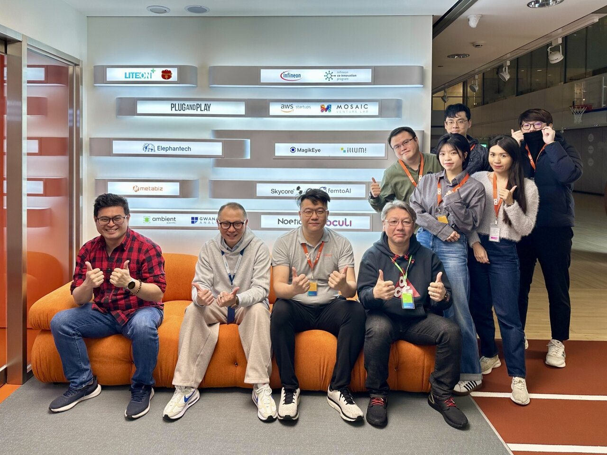
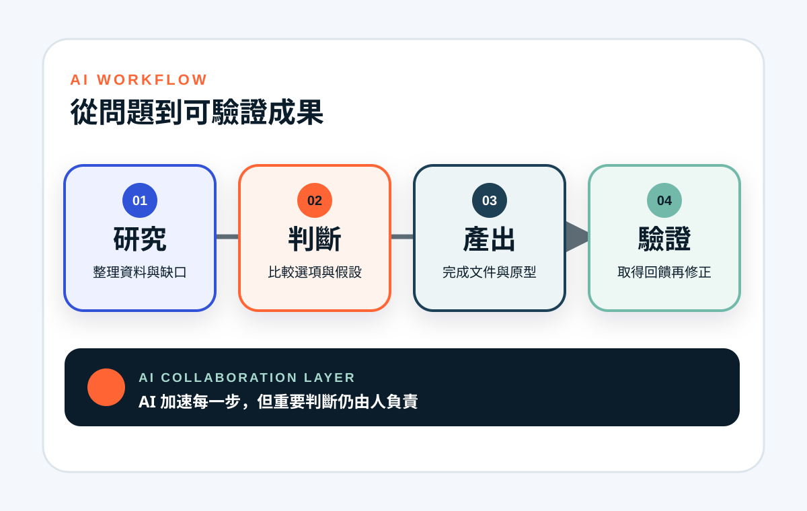
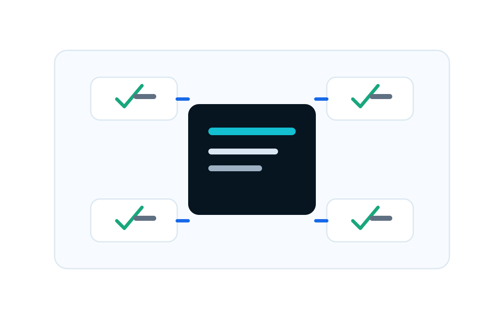

TVBS 新聞網｜2024.09.14
TVBS 新聞網｜2024.09.14
遠距工作、數據管理與 3M 溝通方法
我在 TVBS 報導「在哪都能上班！遠距工作＋提早下班 更有效率與創造力」中，以 metabiz 網路科技公司黃大成身分受訪，分享如何用數據理解工作效率，並以 MindMap 等方法建立遠距團隊的共同圖像。
查看 TVBS 專訪如果你想快速確認我的經驗從哪裡來，可以先看這一頁。我把公開專訪、metabiz 創業紀錄、募資新聞、政府與學術授課，以及 LinkedIn 公開動態整理在這裡；每個重點都盡量附上來源，方便你直接查證。

這兩段公開紀錄，一段看見我的工作方法，一段看見 metabiz 的創業路徑。它們比自我介紹更有力，因為你可以直接看到第三方留下的資料。
TVBS 新聞網｜2024.09.14
我在 TVBS 報導「在哪都能上班！遠距工作＋提早下班 更有效率與創造力」中，以 metabiz 網路科技公司黃大成身分受訪，分享如何用數據理解工作效率，並以 MindMap 等方法建立遠距團隊的共同圖像。
查看 TVBS 專訪LITEON+「串聯萬物的夢」專訪記錄 metabiz 進駐 LITEON+ 加速器與 X SITE 的歷程，也整理我作為 metabiz 共同創辦人的創業背景、TutorABC 銷售管理經驗，以及早期 Zcard、Keeptouchme、The Fifth Avenue 等經歷。
查看 LITEON+ 專訪LITEON+ 採訪中公開記錄我自 2022 年起擔任 metabiz 共同創辦人，並提到過去 TutorABC、Zcard、Keeptouchme、The Fifth Avenue 等經歷。
查看來源經濟日報報導用益網路科技獲千萬種子輪募資，宇斻管理顧問領投，益鼎創投、台灣新創運動總會與國發基金共同參與投資，適合作為「AI 新零售與商業落地」的公司級背書。
查看來源公開資料包含 e 等公務園課程、金門縣政府 AI 講座、StartUP@Taipei AI Forum，以及 2026 政大創客松創業思維課，能支持我作為 AI 應用與創業實戰講師的定位。
查看來源公開搜尋可確認的 LinkedIn 頁為 Blake Huang，網址為 tw.linkedin.com/in/imblake，可作為追蹤我公開動態與專業連結的主要入口。
前往 LinkedIn補充資料整理了我與 metabiz 相關的 AI 導入與數位轉型里程碑。這些內容適合放在個人事蹟中，但我會以「公司與專案背書」呈現，避免誇大成個人單獨完成。


我的個人網站不需要浮誇包裝，而是要讓企業主、活動主辦、媒體與學校一眼看出：我有實戰、有公開紀錄、有可邀請的主題。
照片已整理自補充資料與公開來源。正式上線前，建議再次確認每張照片授權與可公開範圍。